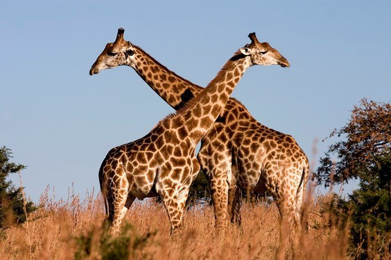

Chi Hươu cao cổ (tên khoa học Giraffa) là một chi các động vật có vú
thuộc bộ Guốc chẵn, là động vật cao nhất trên cạn và động vật nhai lại
lớn nhất. Nó được phân loại trong họ Giraffidae, cùng với họ hàng gần
nhất còn tồn tại của nó là hươu đùi vằn. Chi có 11 loài, bao gồm loài
điển hình Giraffa camelopardalis. Trong số này, có bảy loài tiền sử đã
tuyệt chủng được biết đến qua các hóa thạch, còn bốn loài hiện còn
sống.[1] Tuy Giraffa từng được coi là một loài hiện còn có chín phân
loài, các nhà nghiên cứu DNA ty thể của Giraffa đã khám phá bốn loài
riêng hiện còn sinh tồn.[2][3] Vì thế, chi Giraffa gồm các loài Giraffa
giraffa (hươu cao cổ phương nam), Giraffa tippelskirchi (hươu cao cổ
Maasai), Giraffa reticulata (hươu cao cổ Somalia), và Giraffa
camelopardalis (hươu cao cổ phương bắc).
Hươu cao cổ có phạm vi phân bố rải rác từ Tchad ở miền bắc đến Nam Phi ở
miền nam, và từ Niger ở miền tây đến Somalia ở miền đông châu Phi. Hươu
cao cổ thường sống ở xavan, đồng cỏ và rừng thưa. Nguồn thức ăn chính
của chúng là lá cây keo mà chúng gặm ở độ cao mà hầu hết động vật ăn cỏ
khác không thể với tới. Sư tử có thể săn hươu cao cổ, và con non là mục
tiêu của báo hoa mai, linh cẩu đốm và chó hoang châu Phi. Trong các trận
đánh khi cổ được dùng làm vũ khí, con đực dùng cách này củng cố hệ thống
cấp bậc xã hội.

Toàn thân được bao phủ bởi những đốm không đều nhau trên lớp lông vàng
đến đen phân chia bởi màu trắng, trắng nhờ, vàng nâu. Giống đực có thể
đạt chiều cao từ 4,8 tới 5,5 mét (16 tới 18 foot) và cân nặng lên tới
1.300 kilôgam (3.000 pound). Kỷ lục đo được của một con hươu cao cổ là
cao 5,87 m (19,2 ft) và nặng khoảng 2.000 kg (4.400 lb). Giống cái thì
thường có chiều cao và cân nặng thấp hơn giống đực một chút, vào khoảng
828 kg.
Hươu cao cổ là loài động vật thuộc giống hươu và bò, nhưng lại được phân
nhóm họ khác với các loài kia, đó là họ Hươu cao cổ, họ này bao gồm hươu
cao cổ và một loài họ gần nhất, là hươu đùi vằn. Phạm vi sinh sống của
hươu cao cổ trải dài từ Tchad cho tới Nam Phi.